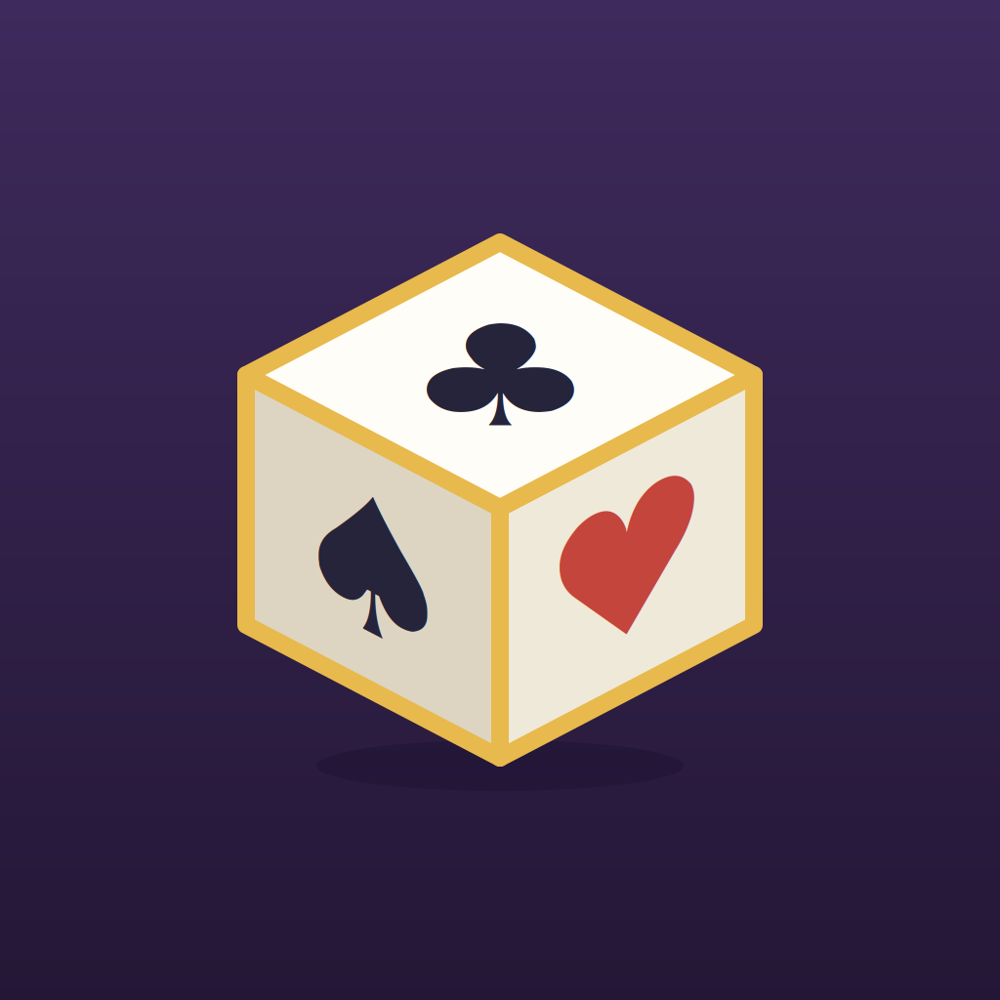
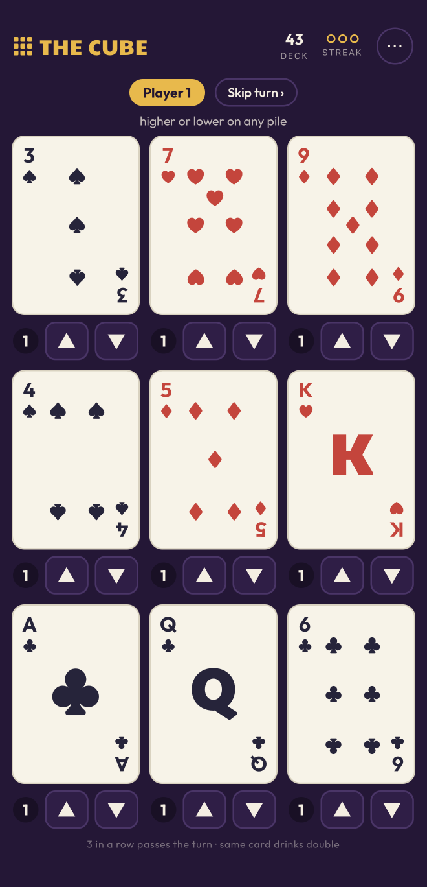

The CubeA Rubi Ventures app · In development
Want a fun game to play with your friends? Give this one a roll.
Nine piles, three by three. Call higher or lower on any pile you like — three correct back-to-back and you're out. Miss, and you drink for as many seconds as there are cards in that pile.
Add your players, pass the phone, and let the cube decide. No accounts, no internet, no nonsense.
Scroll — the deck is still in the air
How it plays
Which is the catch: every miss makes the table more expensive, and the pile you keep dodging is the one someone eventually has to call.
Nothing to set up

Legal
Effective date: July 20, 2026
The short version: The Cube collects nothing. No accounts, no tracking, no ads, no internet connection. Everything happens on your device.
None. The Cube does not collect, store, or transmit any personal information. There is no sign-up, no account, and no login.
Any names you type in to set up a game are held only in the app's temporary memory while you play. They are never saved after you close the app and are never sent anywhere.
The Cube works entirely offline. It contains no analytics or tracking software, no advertising, and no third-party SDKs. Nothing is shared with us or with any third party, because nothing ever leaves your device.
The Cube is a drinking game rated 18+ and is intended only for adults of legal drinking age. It is not directed to children, and we do not knowingly collect information from anyone.
If this policy ever changes, the updated version will be posted on this page with a new effective date.
Questions about this policy? Email contact@rubiventures.com.